Inkscape es un programa de dibujo vectorial libre. Inkscape utiliza SVG como formato de las imágenes, aunque también permite exportar las imágenes en formatos de mapa de bits.
Operaciones básicas
Esta lección no pretende ser un tutorial sobre Inkscape, pero se comentan a continuación la manera de realizar algunas operaciones básicas para obtener imágenes SVG para incluir en páginas web.
Nota: Las capturas de esta página corresponden a la versión 0.48.5. El interfaz de usuario de versiones posteriores puede ser ligeramente distinto.
Ajustar el tamaño de la página al contenido
Antes de guardar el dibujo para incluirlo en una página web, es conveniente ajustar el tamaño de la página al contenido, como se explica a continuación:
- En el ejemplo siguiente, la página es bastante más grande que el dibujo:
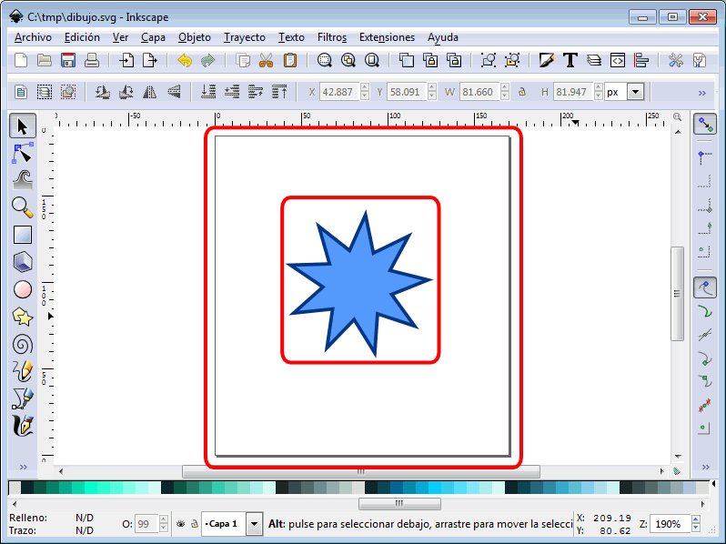
- Para ajustarlo, hay que elegir la opción de menú "Archivo > Propiedades del documento" (teniendo cuidado en no seleccionar ningún elemento previamente porque si no, la página se ajustará al elemento seleccionado, no al dibujo completo):
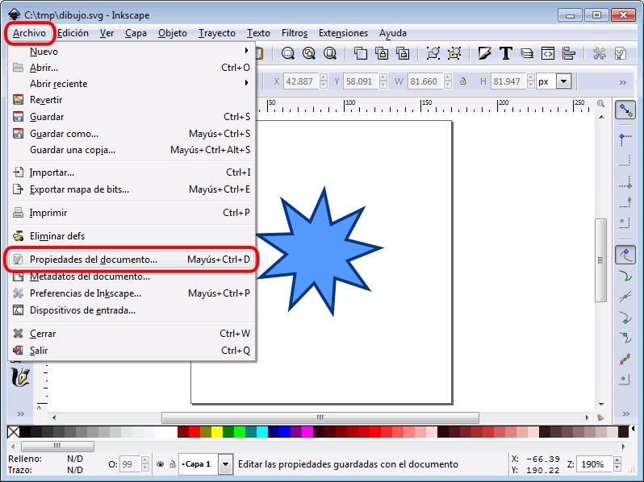
- En la ventana flotante "Propiedades del documento", hay que desplegar la sección "Ajustar página a contenido ..."
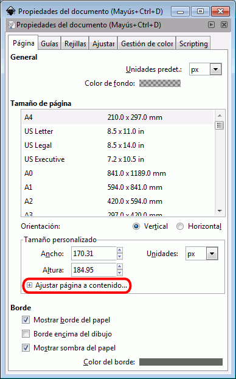
- y en él, hacer clic en el botón "Ajustar página a dibujo o selección":
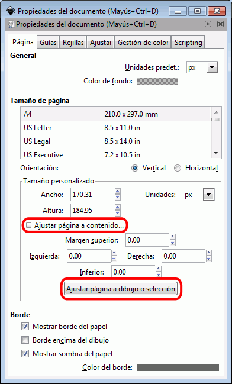
- Automáticamente, la página se ajustará al dibujo:
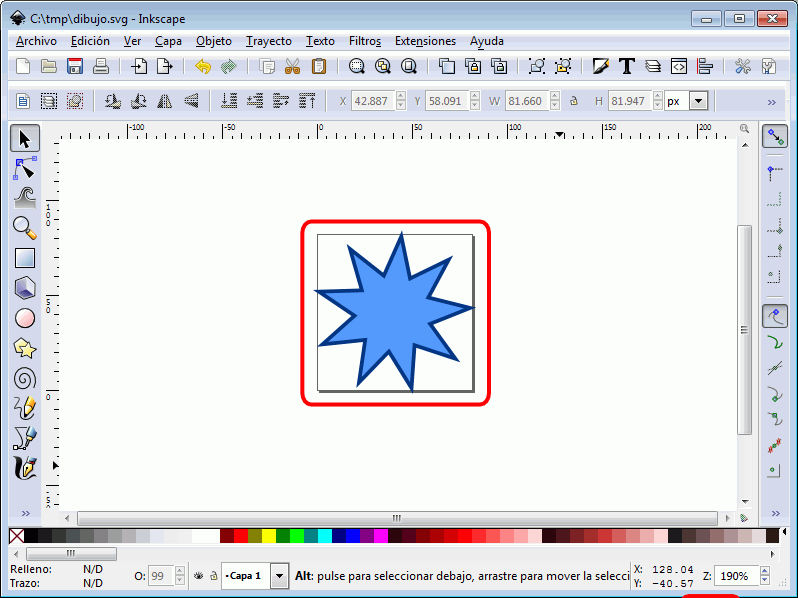
- En este caso, podemos observar que el ajuste no ha sido correcto y el
dibujo sobrepasa la página:
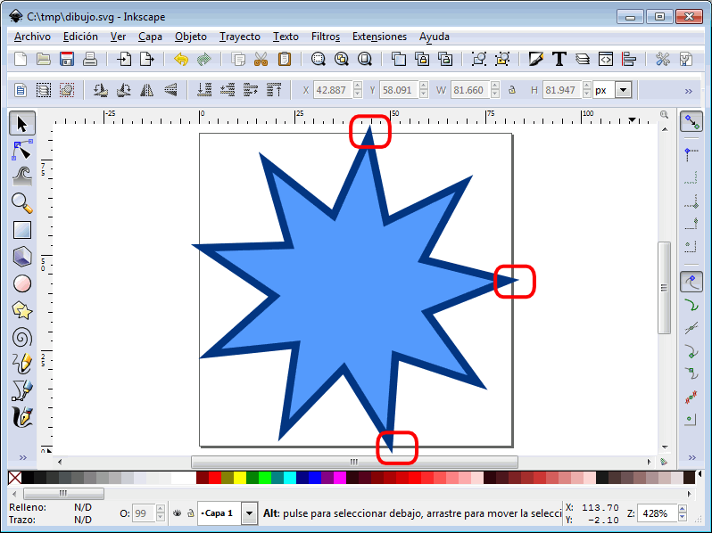
- La solución es volver a abrir la ventana de Propiedades del documento (menú Archivo > Propiedades del documento) y dar un margen alrededor del dibujo:
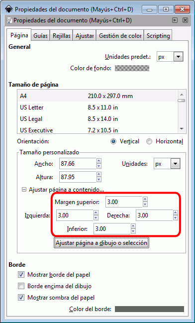
- Ahora, la página sí que contiene completamente el dibujo:
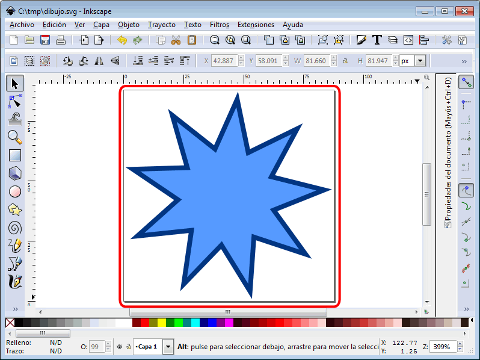
Ajustar el tamaño de la imagen
Si queremos que la imagen tenga un tamaño determinado, podemos hacerlo de la siguiente manera:
- Seleccionar la imagen (haciendo clic, o mediante la opción el menú Editar > Seleccionar todo, o con el atajo de teclado Ctrl+A):
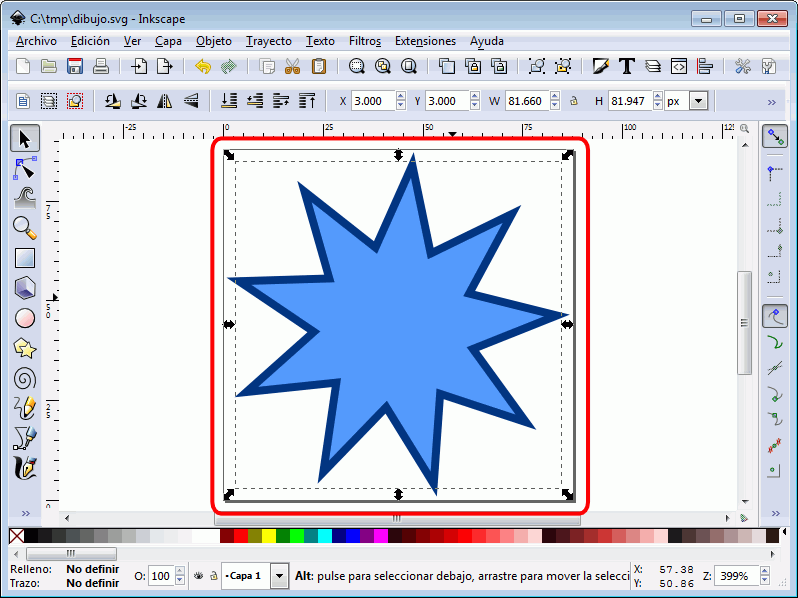
- Hacer clic en el icono de bloqueo de tamaño, para que la figura se transfrome de forma proporcional en horizontal y vertical:
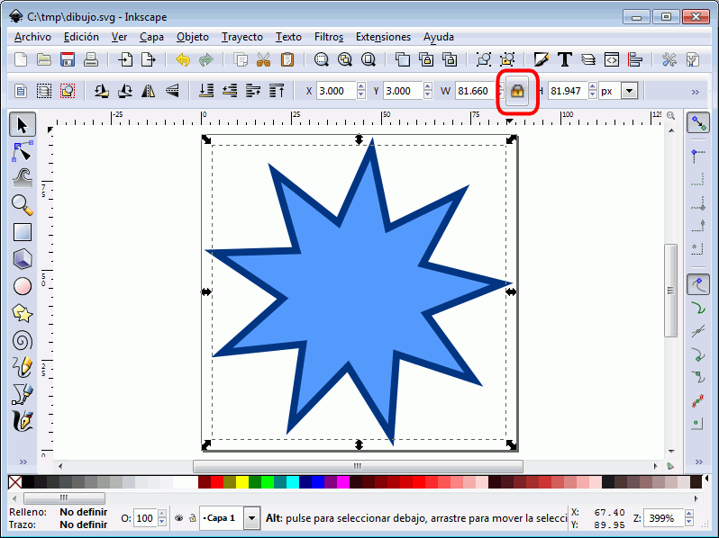
- Escribir el tamaño horizontal o vertical deseado (pulsar Intro una vez escrito el valor):
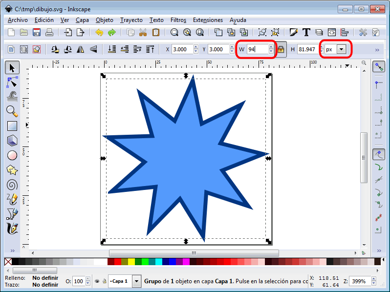
- El otro tamaño se modificará automáticamente (dependiendo de la unidad utilizada, los valores pueden no ser exactamente los indicados, pero serán prácticamente idénticos):
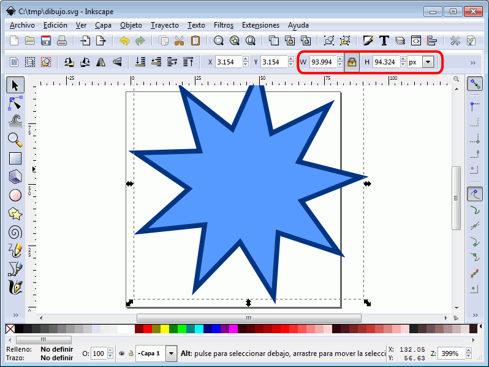
- A continuación se puede ajustar el tamaño de la página al tamaño de la imagen abriendo la ventana de Propiedades del documento (menú Archivo > Propiedades del documento) y escribiendo el tamaño en el apartado "Tamaño personalizado":
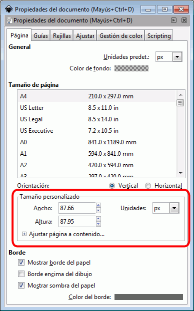
- Por ejemplo, 100 x 100 px. Una vez escrito el valor, se puede minimizar o cerra la ventana con los botones de la esquina superior derecha:
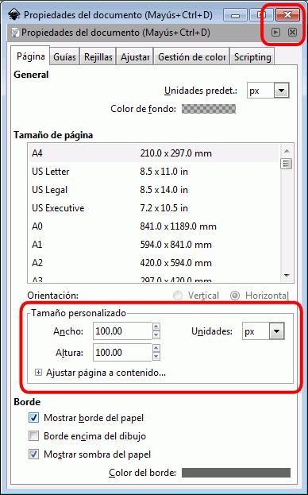
- Si es necesario centrar la imagen en la página, hay que elegir la opción de menú "Objeto > Alinear y distribuir ..." o hacer clic en el icono de "Diálogo de alineación":
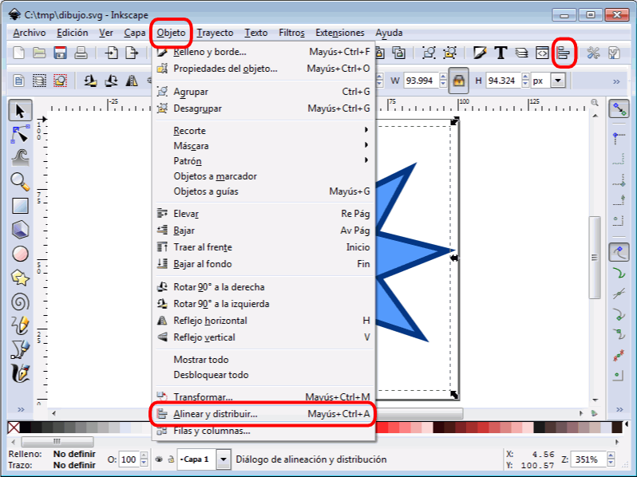
- En ese menú hay que elegir alinear respecto a la página y hacer clic en los iconos de alinear al centro (horizontal y vertical):
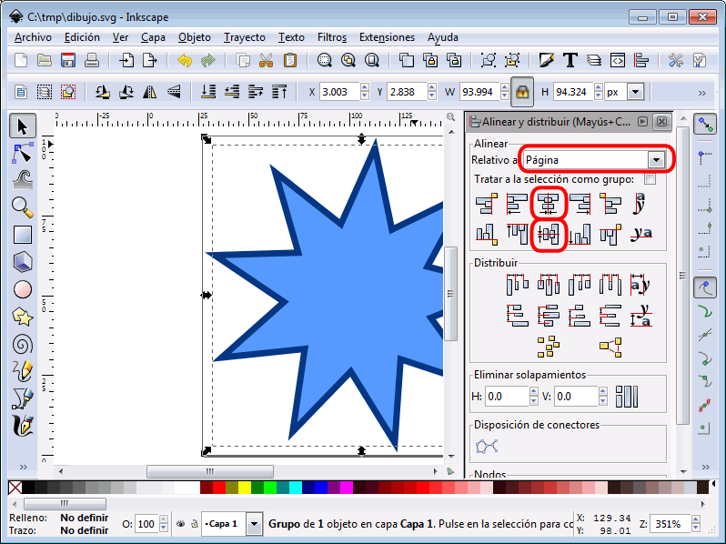
Guardar el dibujo como SVG plano
Si se va a incluir una imagen SVG en una página web, se recomienda guardar los dibujos en el formato SVG plano, como se explica a continuación:
- Una vez acabado el dibujo, hay que elegir la opción de menú "Archivo > Guardar como ..."
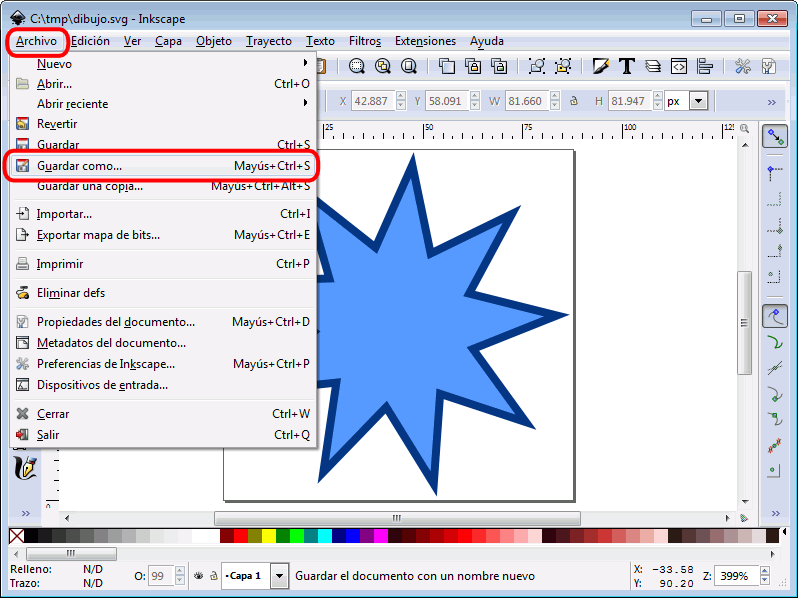
- En la ventana flotante de selección de archivo, hay que desplegar la lista de tipos, elegir el tipo "SVG plano" y hacer clic en el botón Guardar:
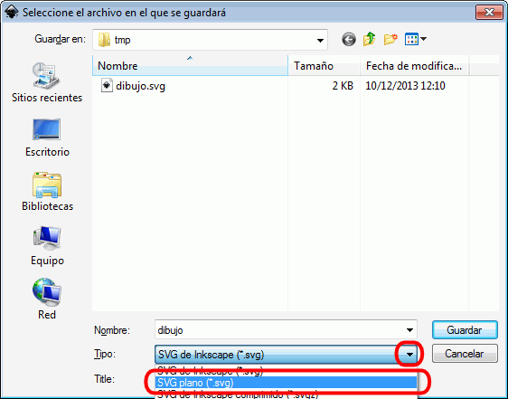
Exportar SVG en formato PNG
Si se quiere incluir la imagen como imagen de mapa de bits, es necesario convertir la imagen vectorial SVG a formato PNG, como se explica a continuación:
- Elegir el elemento a exportar y abrir la opción de menú "Archivo > Exportar mapa de bits ...":
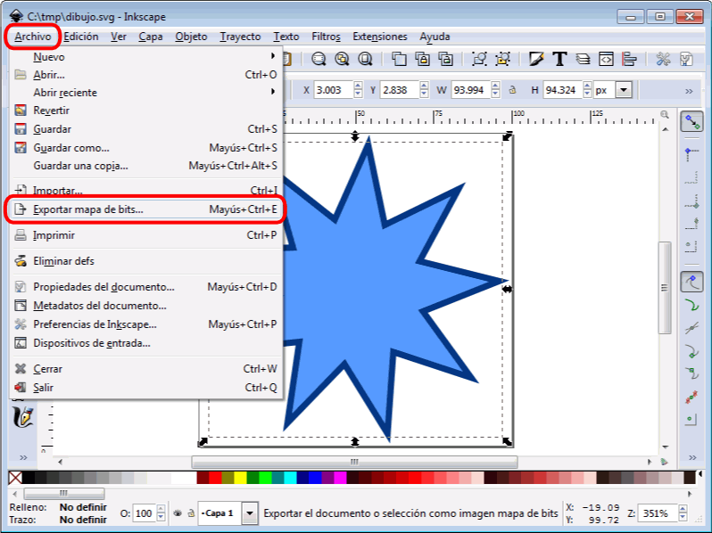
- En la ventana de diálogo, confirmar que se va a exportar la selección actual, elegir el tamaño de imagen en píxeles y el nombre del archivo y hacer clic en el botón Exportar.
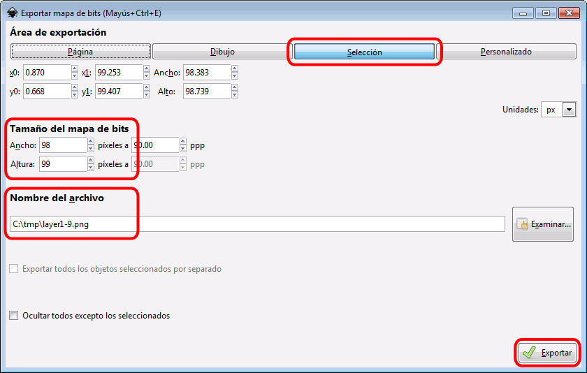